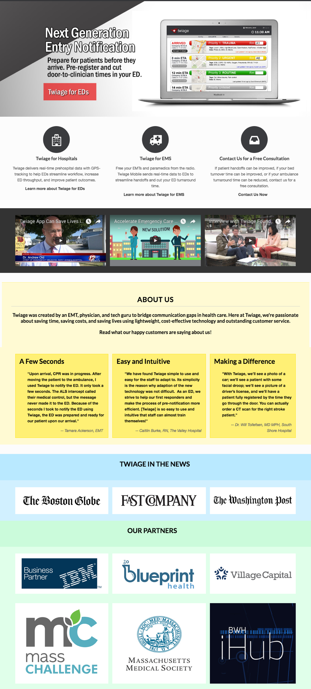

Main Projects: STAT App Release, Website Redesign
Twiage is a Boston based digital health startup that builds disruptive communication technology used between hospitals and ambulances to accelerate emergency care. For the summer of 2017, I had the opportunity to work as the company’s first design intern.
Main Projects: STAT App Release, Website Redesign
My internship coincided with the release of the new mobile STAT app to be used by emergency room staff. In preparation of the release, I ideated/prototyped multiple interaction design solutions in response to early testing user feedback, actively communicating with the product owner and developers along the way. The work is covered by an NDA so please reach out (dennis.kim@tufts.edu) if you'd like to know more.
As the first thing that potential clients will see, the landing page is a crucial entry point for explaining the product, communicating the company's brand mesage, and hopefully garner enough interest to compel customers to sign up for a demo. With a designer now on board, the team decided that it was about time the site had a redesign.
Upon first glance, the old site looked a bit flat and outdated.
Stylistic improvements aside, the main problems of the old site was that it was failing to get signups. This could be due to a variety of reasons but the ones I suspected was its lack of call to actions, confusion as to who the product was for and how it could help.
Before designing, I knew that while I’ve had plenty of exposure to landing pages for general SASS products, I’ve had much less exposure to digital healthcare. Therefore I conducted a competitive analysis in order to get a better sense of the industry.
Additionally I had the opportunity to sit in on a few focus groups with paramedics who use the app as well as sales pitches to hospital ED directors. While listening in and feverishly taking notes and asking questions throughout, I was able to get a better picture of who I was designing for and what their needs might be when looking for a product.
After many, many hours of iterating, implementing, and figuring out Flexbox, the site was ready to be deployed. The project was my first real go at web design so I’m thankful for the time, support, and patience from my supervisor YiDing and the Twiage team.